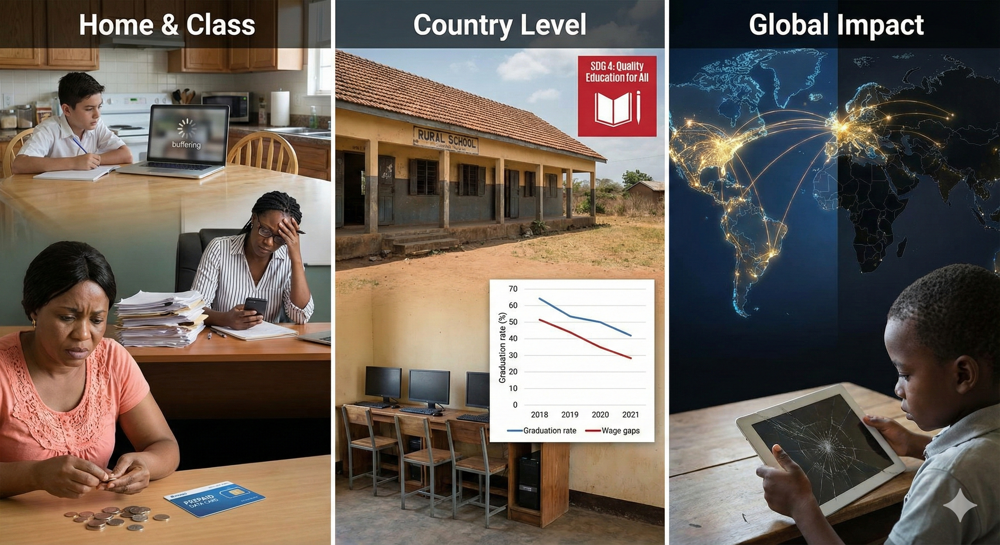
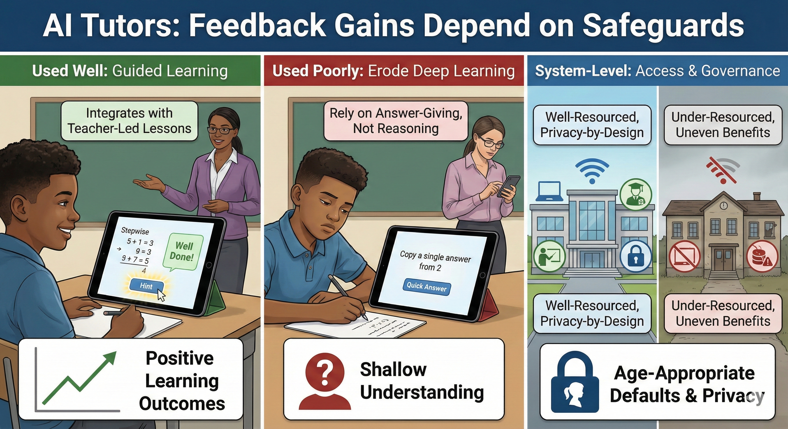
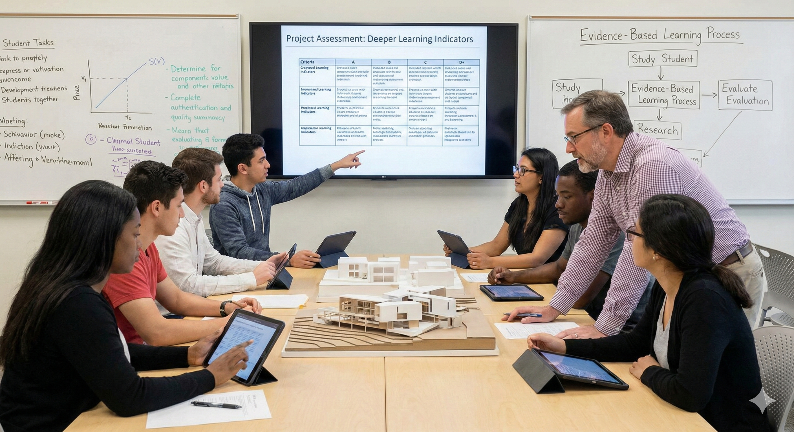
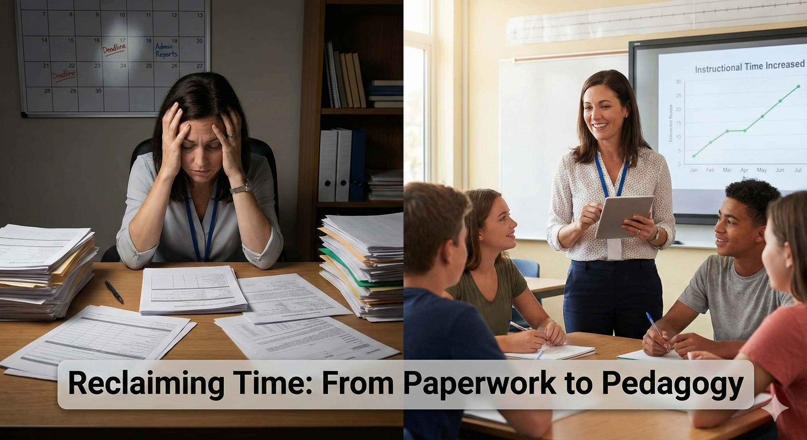
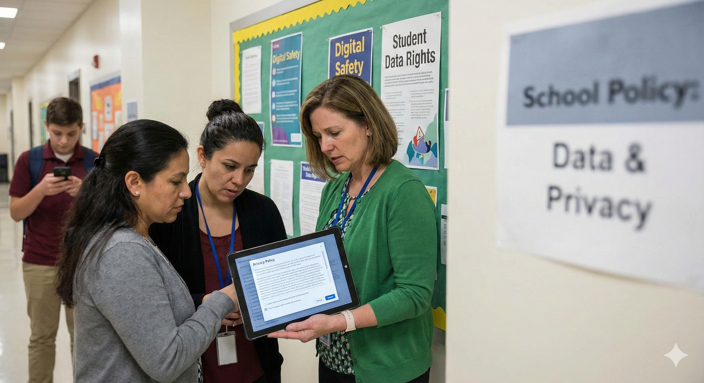

Implications for learners, systems, and equity
Classroom, system, and policy ripples of each AI in education story.
Track how each case ripples across classrooms, communities, and global targets. Capture emerging evidence of impact so recommendations stay grounded in what happens to real learners and teachers.

Case 1
Unequal access becomes unequal participation
The social impact appears first at home and in class. Students with thin connectivity miss explanations, submit late, and receive less feedback. Teachers duplicate materials for low bandwidth use and spend evenings chasing messages, which increases burnout. Parents shoulder costs for data and travel to community Wi-Fi spots. These pressures reduce engagement and confidence for the students who can least afford it (UNICEF, 2020; Avanesian et al., 2021).
At the country level, unequal access becomes unequal attainment. Rural schools and low income neighborhoods struggle to attract and retain teachers who face heavy administrative burdens without the tools to manage them. Graduation rates fall in the most affected regions and employability narrows to those who had consistent access. Wage gaps widen as a predictable result of uneven learning time and feedback quality (World Bank, 2025).
Globally, persistent access gaps undermine progress on SDG 4. Better connected systems advance on blended learning and teacher development, while others struggle with basic participation. The divide affects knowledge exchange and local innovation. When digital childhood is fragmented, long term outcomes for health, safety, and opportunity suffer as well (UNICEF Office of Research Innocenti, 2025).

Case 2
Feedback gains depend on safeguards
Used well, AI tutors can increase practice, feedback, and confidence. Students receive stepwise hints, adaptively harder problems, and immediate explanations. Meta-analyses on intelligent tutoring report moderate positive effects on learning outcomes compared with business-as-usual instruction, especially when systems integrate with teacher-led lessons rather than run in isolation (Ma et al., 2014; American Psychological Association).
Used poorly, AI can erode deep learning. If students copy model outputs or rely on answer-giving rather than coached reasoning, they risk shallow understanding and academic integrity issues. Teachers may become over-dependent on automated feedback and reduce rich, dialogic instruction. Policy reports caution that hallucinations, bias, and low-quality prompts mislead learners without strong scaffolds and review (U.S. Department of Education, 2023; UNESCO, 2023).
System-level effects depend on access and governance. Well-resourced schools can pair AI with teacher training, while under-resourced schools may deploy tools without bandwidth, devices, or oversight. That creates uneven benefits and new privacy exposures if vendors collect more data than necessary. International guidance urges procurement that bakes in privacy-by-design and age-appropriate defaults to scale benefits while avoiding harm (OECD, 2023; UK Information Commissioner’s Office, 2020).

Case 3
Deeper learning with transparent evidence
For students, authentic tasks change the learning contract. They must plan, collaborate, make decisions under constraints, and explain reasoning, which strengthens transfer to new situations. Performance assessment initiatives report gains in higher-order skills and richer feedback when tasks and rubrics are well implemented (Guha et al., 2018; Learning Policy Institute).
For instructors, assessment becomes part of pedagogy. Rubrics clarify what counts as quality, moderation builds shared standards, and reflective prompts surface metacognition, giving faculty actionable insight to refine teaching (Darling-Hammond, 2013).
System wide, policy can shift from testing what is easy to measuring what matters. Investments in teacher assessment literacy and balanced systems support equitable use of evidence to improve learning, rather than simply rank students (UNESCO, 2023).

Case 4
Feedback, retention, and system productivity
In the near term, unchecked admin load translates into less feedback for students, thinner lesson preparation, and more teachers reporting frequent stress and burnout than comparable workers. Multiple survey waves highlight administrative work among the top stressors (RAND, 2024).
Over time, high workload and weak support drive attrition and reduce the attractiveness of the profession. International teacher surveys show how time divides between instruction and paperwork, with shrinking teaching time harming quality and equity as complex learners lose the most attention (OECD, 2025).
At system level, the opportunity cost is huge. Studies estimate that a significant portion of teacher hours could be automated or simplified with existing technology, freeing time for feedback, small-group instruction, and collaboration when paired with thoughtful schedules and training (Bryant et al., 2020; UNESCO, 2023).

Case 5
Privacy gaps reshape trust, participation, and rights
For students and families, weak privacy practices create real harms. Data trails from childhood can fuel targeted advertising, profiling, or leaks through poorly secured systems. This chills participation, stigmatizes students, and can follow them into later life. The 2023 Global Education Monitoring Report showed that many edtech products recommended during the pandemic could survey learners and risked children’s rights (UNESCO, 2023).
For schools and teachers, unclear rules waste time and erode trust. If every classroom uses a different app with a different privacy posture, educators become accidental data controllers without training. Breaches and complaints then reduce confidence in digital learning, even when tools have genuine instructional value. OECD governance analysis argues that coherent data policy is essential to maintain legitimacy with families and staff (OECD, 2023).
At the policy level, the child’s right to privacy and the obligation to act in the child’s best interest apply online as much as offline. The UN Committee on the Rights of the Child’s General Comment No. 25 requires states to regulate private actors so the digital environment respects children’s rights by default, not merely through consent clicks few can understand (Committee on the Rights of the Child, 2021).